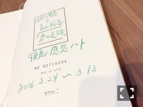
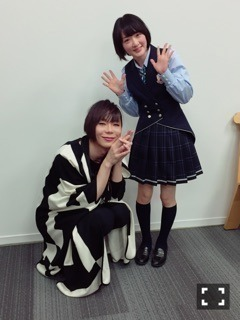

| 2016/04 04 Mon | やめてよもう、桜散らさないでよまだ花見してないよ葉桜も 綺麗だけどさぁ。 |
気付いたら時間が経っておりました。
花粉のせいか目にモヤがかかっていやんなっちゃう

そんな今日はジャンポリ収録がありましたヽ(・∀・)ノ
みんな仲良しこよし
芸能界の先輩に囲まれてのお仕事ですが、
とっても頼りになるお兄ちゃんとお姉ちゃんが出来たみたいな気持ちです


松パーカーで揃えたよ(＾ω＾)
松ロスなう
と言いつつ最終話が凄すぎてロスもなにも全部ぶっ飛びました
春アニメ始まったね〜ヽ(・∀・)ノ
よきによきに♨︎
甲鉄城のカバネリに生駒が出ますね。
生駒って名前のキャラクター珍しいからめちゃ楽しみ！
アイナナにも生駒瀬名というキャラクターいますがヽ(・∀・)ノ
自分の苗字がアニメにあるって凄く嬉しい気持ち
先日「君の足跡」のブックカバーお渡し会がありました(＾ω＾)
来てくださってありがとうございます！！
始球式の次の日で、
歩くだけで身体が痛くてしんどかったけど、
皆さんの笑顔を見たら不思議なパワーが出てきて身体が痛いの治りました⭐️
青山さんから写真展で皆さんに書いてもらったメッセージ帳を頂きました(((o(*ﾟ▽ﾟ*)o)))
温かい気持ちになりました！
ひとつひとつゆっくりと読みました(((o(*ﾟ▽ﾟ*)o)))

あと、青山さんが
君の足跡という作品の中で
10代の生駒ちゃんは生き続けるから
安心して２０歳の生駒ちゃんを高めていって下さいとおっしゃって下さいました。
だから、全力で物事をやって行きます！
生駒の変。
頑張ります！
ZIP!春フェス2016に出演させて頂きました(((o(*ﾟ▽ﾟ*)o)))
しゃちほこのほのかちゃんと久しぶりにあったよ〜ヽ(・∀・)ノ
制服のマネキンを歌ってくださって(´；ω；｀)
嬉しかったな〜⭐️⭐️
自分達の本番もめちゃめちゃ気合い入りました！！
呼んで下さり本当にありがとうございましたヽ(・∀・)ノ
あとあと〜
別冊カドカワ 総力特集 乃木坂46発売中です〜！

ミッツさんと対談させて頂きました！！
深いいろんなお話ししましたヽ(・∀・)ノ
他にも乃木坂メンバーのあんな事やこんな事載っているので是非手にとって下さいね！！
今夜もコーラがうまいですっ！
へばなっ☆彡
コメント(410)
2016/04/04 21:40